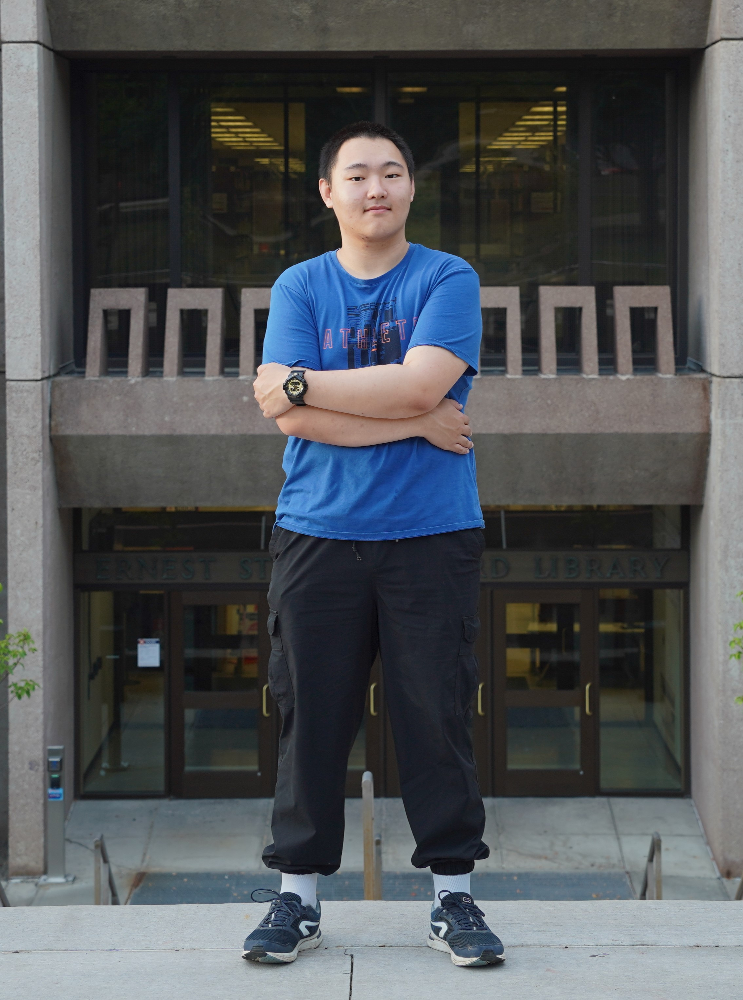

|

| Google Scholar | |
Hi! I am a first-year Master of Applied Science student in Electrical and Computer Engineering at the University of British Columbia. Previously, I earned My Bachelor of Engineering degree in Artificial Intelligence from Department of Computer Science and Engineering at the Chinese University of Hong Kong. My research lies at the intersection of Artificial Intelligence, Software Engineering, and Security. Specifically, I am interested in how to build robust, safe and fair AI systems. I am currently working with Prof. Julia Rubin and Prof. Simon Oya. Previously, I had the privilege of working with Prof. Michael R. Lyu and Prof. Wenxuan Wang at CUHK, as well as Prof. Xin Eric Wang at the UC Santa Barbara. |